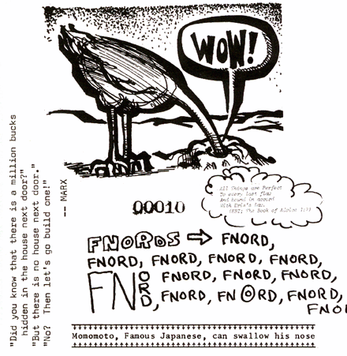

|
"What is this?" mumbled one to the other, "A religion based on The Goddess of Confusion? It is utter madness!"
And with those words, each looked at the other in absolute awe. Omar began to giggle. Mal began to laugh. Omar began to jump up and down. Mal was hooting and hollering to beat all hell. And amid squeals of mirth and with tears on their cheeks, each appointed the other to be high priest of their own madness, and together they declared themselves to be a society of Discordia, for what ever that may turn out to be.

|